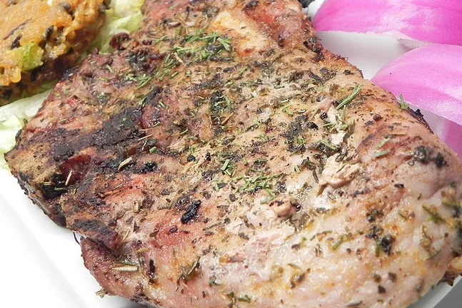

Pork Chops

Great rub for grilled pork! Use on pork chops, pork tenderloin, pork skewers. Great for grilling!
Preparation time is 10 minutes and cooking time is 5 minutes.
This dish can serve up to 8 people.
Ingredients
- quarter cup of fennel seed
- 1 and a half tablespoons coriander seed
- half a tablespoon whole black peppercorns
- 1 pinch salt, or to tastez
Steps
- Cook and stir fennel seed, coriander seed, and peppercorns in a skillet over medium heat until lightly browned and fragrant, 1 to 3 minutes. Remove from heat and let cool briefly.
- Combine fennel seed mixture and salt in a food processor and blend to fine powder.